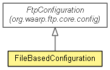

org.waarp.ftp.simpleimpl.config
Class FileBasedConfiguration
java.lang.Object
 org.waarp.ftp.core.config.FtpConfiguration
org.waarp.ftp.simpleimpl.config.FileBasedConfiguration
org.waarp.ftp.core.config.FtpConfiguration
org.waarp.ftp.simpleimpl.config.FileBasedConfiguration
public class FileBasedConfiguration
- extends FtpConfiguration

FtpConfiguration based on a XML file
- Author:
- Frederic Bregier
| Fields inherited from class org.waarp.ftp.core.config.FtpConfiguration |
BLOCKSIZE, businessHandler, CLIENT_THREAD, dataBusinessHandler, DEFAULT_GLOBAL_LIMIT, DEFAULT_SESSION_LIMIT, delayLimit, deleteOnAbort, fromClass, isShutdown, maxGlobalMemory, SERVER_THREAD, serverChannelReadLimit, serverChannelWriteLimit, serverGlobalReadLimit, serverGlobalWriteLimit, TIMEOUTCON, USEJDK6 |
| Methods inherited from class org.waarp.ftp.core.config.FtpConfiguration |
bindLock, bindUnlock, changeNetworkLimit, checkPassword, computeNbThreads, delFtpSession, getBaseDirectory, getDataBusinessHandler, getDelayLimit, getFileParameter, getFileProperty, getFtpInternalConfiguration, getFtpSession, getIntProperty, getLock, getProperty, getServerAddress, getServerChannelReadLimit, getServerChannelWriteLimit, getServerGlobalReadLimit, getServerGlobalWriteLimit, getServerPort, getStringProperty, getUniqueExtension, hasFtpSession, releaseResources, serverStartup, setBaseDirectory, setFileProperty, setIntProperty, setNewFtpSession, setPassword, setProperty, setServerAddress, setServerPort, setStringProperty |
| Methods inherited from class java.lang.Object |
clone, equals, finalize, getClass, hashCode, notify, notifyAll, toString, wait, wait, wait |
FileBasedConfiguration
public FileBasedConfiguration(Class<?> classtype,
Class<? extends BusinessHandler> businessHandler,
Class<? extends DataBusinessHandler> dataBusinessHandler,
org.waarp.common.file.FileParameterInterface fileParameter)
- Parameters:
classtype - businessHandler - class that will be used for BusinessHandlerdataBusinessHandler - class that will be used for DataBusinessHandlerfileParameter - the FileParameter to use
setConfigurationFromXml
public boolean setConfigurationFromXml(String filename)
- Initiate the configuration from the xml file
- Parameters:
filename -
- Returns:
- True if OK
getSimpleAuth
public SimpleAuth getSimpleAuth(String user)
- Parameters:
user -
- Returns:
- the SimpleAuth if any for this user
getNextRangePort
public int getNextRangePort()
- Description copied from class:
FtpConfiguration
- Return the next available port for passive connections.
- Specified by:
getNextRangePort in class FtpConfiguration
- Returns:
- the next available Port for Passive connections
- See Also:
FtpConfiguration.getNextRangePort()
inShutdownProcess
public void inShutdownProcess()
- Description copied from class:
FtpConfiguration
- Shutdown process is on going
- Specified by:
inShutdownProcess in class FtpConfiguration
Copyright © 2009-2012 Waarp. All Rights Reserved.